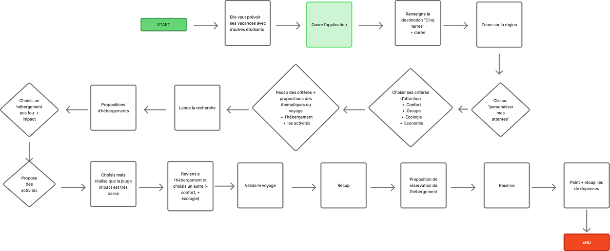

- Contexte
- Problèmatique
- Pour qui ?
- Userflow
- La solution
- Retours tests utilisateurs
- Nos futures améliorations
Contexte
Une application née d’un besoin simple : voyager autrement, sans se perdre ni se priver. Ne pas chercher la perfection, juste des alternatives concrètes : des idées de destinations accessibles en train, des astuces pour camper sans stress, des lieux écoresponsables où se sentir bien. Alors, on a imaginé une application pour aider à franchir le pas. Une appli qui ne juge pas, mais qui guide. Qui inspire, conseille, rassure. Parce que faire mieux, c’est déjà beaucoup. Et parce que derrière chaque petite action, il y a un pas vers un voyage plus libre, plus doux, plus vivant, plus éco.
Problèmatique
Comment Marie peut-elle transformer ses habitudes de voyage pour répondre aux enjeux écologiques sans perdre le confort qu’elle valorise ?
Pour qui?
Cette application a pour but d'encourager les personnes éloignées du monde écologique à s’en rapprocher et à adapter davantage leurs habitudes en faveur de l’écologie dans le domaine du voyage.

Userflow
La solution
Low FI


Mid FI
Hight FI - Prototype


“Fixer les barres en haut et en bas pour qu’elles ne bougent pas lors du scroll”

Avant

Après
“Carte à harmoniser”

Avant

Après
“Remplacer “Valider” par “Réserver mon voyage””

Avant

Après
Nos futures améliorations :
- 1. Éviter que les icônes de logement et d’activités sportives ne se déplacent lorsque le point joker apparaît.
- 2. Fixer l’en-tête de la page alternative.
- 3. Changer les images de la page récapitulative.